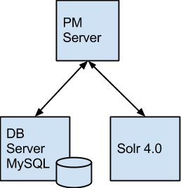
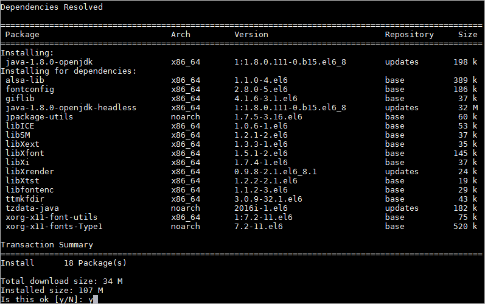
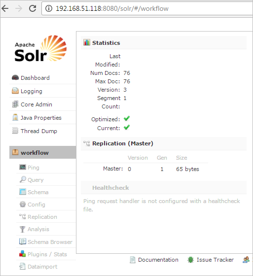
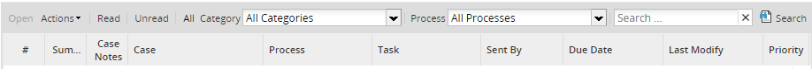
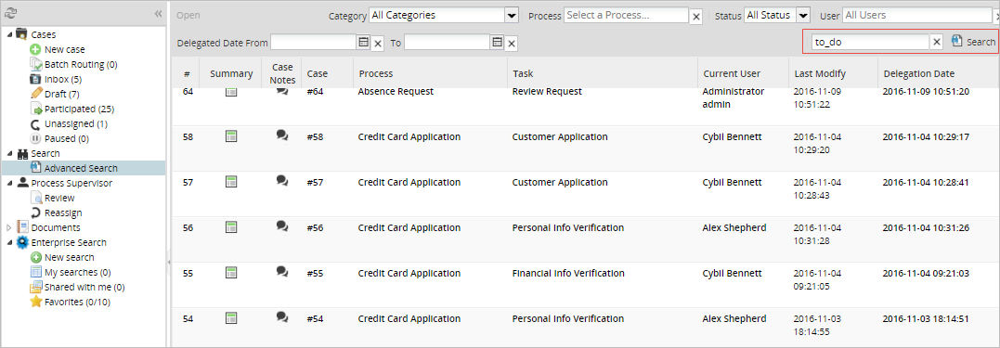
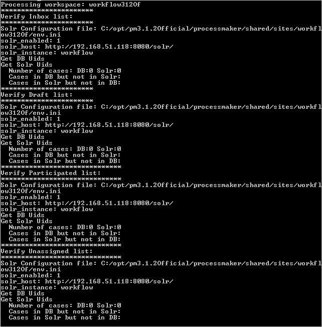

Overview
The Solr server index the case records of ProcessMaker through synchronization with the ProcessMaker database. The purpose to use Solr is the additional functionality to search specific information and the faster response of the index to search queries.
Requirements
- ProcessMaker version 3.1.
- Apache Tomcat version 7 or later.
- Linux Server.
Solr Architecture
The Solr implementation in PMOS objetive is to provide a indexation server, that allows to run indexed searchs on stored data in cases (APP_DATA). Aditionally, this server can be used to see the cases list in ProcessMaker (Lists: Inbox, Draft, Participated, Unassigned and advanced search) in order to improve this lists performance.

Solr’s logic is the following:
- The Browser client requires ProcessMaker server to show the cases lists in Inbox.
- The ProcessMaker server queries Solr for the list that needs to be show, depending on pagination conditions, text to search, current user filter, and other filter selected by the user to search the cases information on APP_DATA.
- The Solr server returns the cases ID’s to be shown according the (list APP_UID).
- The ProcessMaker server completes the cases information querying the Data Base. For example, it completes the process name, the task name, the initial date, etc. etc.
- Finally, the ProcessMaker server return the filtered list to the Browser user.
Tomcat Installation
Apache Solr is written in Java, it needs a servlet container like Apache Tomcat. To install Apache Tomcat, first download it from Apache Tomcat website or use the following wget command to download it directly. The current stable version of Tomcat is 7.0.72.
It's also needed to install Java JDK 1.6 or superior.

After install openJDK, uncompress the tomcat .tar.gz with the following command:
Move the uncompressed Tomcat folder to: /usr/share/tomcat7
Create a file named setenv.sh inside /usr/share/tomcat7/bin to define the environment variables.
Inside the setenv.sh file, place the following content (Replace if necessary with the correct paths to JAVA_HOME and JRE_HOME):
Save and close the file.
Start the Tomcat service by running the following command:
Create a new file named solr.xml in the following location: /usr/share/tomcat7/conf/Catalina/localhost/
Then, paste the following content:
Finally, save and close the file.
Solr Installation
Download the solr.tar.gz file directly from here. This file is already configured to facilitate the integration of Solr with ProcessMaker.
Extract the file and move the content to the /opt folder.
Then, give the folder the following permissions:
This Solr installation comes with the necessary files to achieve a successfull integration between Solr and ProcessMaker.
Between them, an instance named workflow already configured to be integrated with any ProcessMaker workspace and a template named workflow.solr.tar.gz to create new instances easily. Note that each Solr instance refers only to one ProcessMaker Workspace and a server can have more than one Solr instance running.
Finally, restart the Tomcat service.
The Solr server is ready now to work with ProcessMaker.
To access the Solr interface, open your favorite browser and go to: http://ip-server:8080/solr/#/

Solr Activation in ProcessMaker
Once the Solr installation is ready, it is necessary to configure ProcessMaker to use the Solr server. Since every workspace has it's own Solr instance, the ProcessMaker configuration must be done for every workspace in its own env.ini file located at: <INSTALL-DIRECTORY>/shared/sites/workspace-name/env.ini
Add the following lines inside the env.ini file:
Save and close the file.
Indexation and reindexation
It is necessary to synchronize the Solr server with the ProcessMaker database in order to return updated information. Therefore, it is important to run the following commands to run a synchronization called indexation.
Go to: /opt/processmaker/workflow/engine/bin/:
Run the following command:
The reindex_solr.php script has the following possible actions:
reindexall:Reindex all the database. This command has some additional options:-skip {record_number}:Used to skip a specific number of records. For example, to skip the first 10000 records:php.exe -f reindex_solr.php ProcessMaker-Workspace reindexall -skip 10000 -
-reindextrunksize {trunk_size}:Specify the number of records sent to index each time. If not included, the default value is 1000.php.exe -f reindex_solr.php ProcessMaker-Workspace reindexall -reindextrunksize 100
reindexmissing:Reindex only the missing records stored in database. If for some reason the connection with the Solr Server is missing, the records created are stored in the wf_<workspace>.APP_SOLR_QUEUE table. By executing this command, all missing records will be indexed.php.exe -f reindex_solr.php ProcessMaker-Workspace reindexmissing optimizeindex:Optimize the changes in the search index.php.exe -f reindex_solr.php ProcessMaker-Workspace optimizeindex reindexone -appuid {APP_UID}:Re-index a single case.
All case changes will be automatically synchronized by the Solr server once ProcessMaker is configured and the first time synchronization is done.
The following events re-index an application:
- The first time that a database is indexed, all the application records are indexed.
- A change in the application table.
- A new delegation is created or modified, when a user delegates a case.
- A user creates a new application.
- A user finishes a case.
- A user reads a case.
- A user pauses a case.
Multiple Solr Instances
Remember that each Solr instance refers to only one ProcessMaker workspace. Therefore, to add a new workspace to the Solr server read the following instructions:
Create a new folder inside /opt/solr with the name of the new instance. Remember that Solr instances can be named different from the ProcessMaker workspace.
Decompress the workflow.solar.tar.gz file located at /opt/solr inside the folder created.
A new folder named workflow will be created inside /opt/solr/new-folder-name. Rename this workflow folder as desired. For example: new-instance and move it to /opt/solr/
Make sure that the new-instance folder is placed inside the Solr root folder as shown in the image below.
Now, it is necessary to declare the new instance in the Solr Core file: solr.xml. This file has the following content:

Add a new line inside the cores tag with the name of the new instance and the instance directory.
Finally, restart the tomcat services.
Do not forget to index the new instance in the ProcessMaker installation.
Repeat these instructions for each workspace. Remember that every instance must have it’s own folder and this folder must be declared in this xml file.
ProcessMaker Search implemented with SOLR
The new search functionality is available in all the views that include a search field.

- Inbox
- Draft
- Participated
- Unassigned
- Advanced Search
The search functionality can search in the fields of Process Title and Application Status. To search in those fields the user only has to write the text in the search field.

Additionally the user can search in all the variables of the application data defined in the process and filled in the application. The following syntax must be used to search in a specific application variable.
Where:
- variable-name: The name of the variable defined inside the process.
- search-text: The text to be search in the variable.
For example if a variable "lastNameCustomer" is defined, then the search syntax to search for all the applications where the customer name is "Travis" will be:

- Wild-cards: Use
*as wild-card at the begin or end of word. Only lowercase, no accents and no special characters are admitted with wild-cards. - Multiple conditions: Separate multiple conditions by space. For example:
Materials year:20*, means that the user is searching for the word "Materials" and the "year" variable that begins with 20. - Dates:
- Format:
{variable}:[yyyy-mm-dd TO yyyy-mm-dd]. For example:
RegistryDate:[2016-10-15 TO 2016-10-30] - Wildcard *: For example:
RegistryDate:[* TO 2011-04-30]
- Format:
Structure of the APP_SOLR_QUEUE table
The APP_SOLR_QUEUE table was created as a warehouse to store all the cases that need to be re-indexed.
| Field | Type | Description |
|---|---|---|
| APP_UID | Varchar(32) | The application identifier UID. |
| APP_UPDATED | tinyint(1) | 0: false not require update 1: true update required for application |
| APP_CHANGE_DATE | datetime | |
| APP_CHANGE_TRACE | varchar(500) |
If necessary, the following query can restablish the table structure.
CREATE TABLE APP_SOLR_QUEUE (APP_UID VARCHAR(32), APP_UPDATED TINYINT, APP_CHANGE_DATE DATETIME, APP_CHANGE_TRACE VARCHAR(500));
Solr Failover
To disable the use of Solr, it is necessary to delete the whole Solr configuration. The flag "solr_enabled" in the env.ini controls whether the server will use Solr for listings of cases. If it is off the list of cases consult the database, however the Solr server synchronization remains active.
The following table details the possible states for the Solr implementation and recovering the same in each case.
| Flag Solr_Enabled | Solr Server | Status | Recovery |
|---|---|---|---|
| solr_enabled=1 | ON | Solr server synchronized and case lists are retrieved from solr server. | It is not necessary, the server is synchronized and responding to requests. |
| solr_enabled=1 | OFF | As the Solr server is off, is not possible to pair, and lists of cases are consulted to the database automatically. Cases to be synchronized are recorded with the Solr server once it becomes available |
You must verify network communication with Solr server. Once the server is available again, the same is automatically synchronized with the database server. Synchronization is activated with the application of case listings. No need to do anything extra. |
| solr_enabled=0 | ON | Solr Server synchronized, but the lists of cases are returned from the database. | No need for correction, when required to return the list of cases from the Solr server, should only be activated solr_enabled = 1 |
| solr_enabled=0 | OFF | Solr Server is out of sync, and case lists queries are being obtained from the database automatically. The modified cases are occurring, to be synchronized when the Solr server is available. |
You must verify network communication with Solr server. Once the server is available again, you should run the script to re-indexing of pending cases. php reindex_solr.php [workspace name] reindexmissing After running the script, the Solr server is synchronized with the database. |
Case Lists Validation
A script was created to compare the cases indexed in the Solr server versus the cases in the ProcessMaker database. In other words, this script compares the cases list in every folder (Inbox, Draft, Participated, Unassigned). The verify_solr.php script is located at: <INSTALL-DIRECTORY>/workflow/engine/bin/
To run this script, go to:
Then, run the following command:
Where:
workspace-name: The workspace to verify.- -usruid
USR_UID: The UID of the user whose cases will be verified.
For example, to verify the cases list for the administrator user (USR_UID = 00000000000000000000000000000001) in the workspace "workflow".
The outcome will be:

Not supported
The search functionality is not included to:
- Search in grids.
- Search in PM tables.